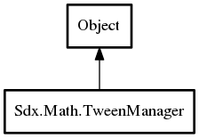

TweenManager
Object Hierarchy:

Description:
public class TweenManager :
Object
A TweenManager updates all your tweens and timelines at once. Its main interest is that it handles the tween/timeline life-cycles for
you, as well as the pooling constraints (if object pooling is enabled).
Just give it a bunch of tweens or timelines and call update() periodically, you don't need to care for anything else! Relax and enjoy
your animations.
based on code by Aurelien Ribon
See also:
Tween, Timeline
Content:
Static methods:
- public static void SetAutoRemove (Tween object, bool value)
Disables or enables the "auto remove" mode of any tween manager for a
particular tween or timeline. This mode is activated by default. The interest of desactivating it is to prevent some tweens or
timelines from being automatically removed from a manager once they are finished. Therefore, if you update a manager backwards, the
tweens or timelines will be played again, even if they were finished.
- public static void SetAutoStart (Tween object, bool value)
Disables or enables the "auto start" mode of any tween manager for a
particular tween or timeline. This mode is activated by default. If it is not enabled, add a tween or timeline to any manager won't
start it automatically, and you'll need to call .start() manually on your object.
Creation methods:
Methods:
- public TweenManager Add (Tweenbase object)
Adds a tween or timeline to the manager and starts or restarts it.
- public bool ContainsTarget (void* target, int tweenType = -1)
Returns true if the manager contains any valid interpolation
associated to the given target object and to the given tween type.
- public void KillAll ()
Kills every managed tweens and timelines.
- public void KillTarget (void* target, int tweenType = -1)
Kills every tweens associated to the given target and tween type. Will
also kill every timelines containing a tween associated to the given target and tween type.
- public void Pause ()
Pauses the manager. Further update calls won't have any effect.
- public void Resume ()
Resumes the manager, if paused.
- public void Update (float delta)
Updates every tweens with a delta time ang handles the tween life-
cycles automatically. If a tween is finished, it will be removed from the manager. The delta time represents the elapsed time between
now and the last update call. Each tween or timeline manages its local time, and adds this delta to its local time to update itself.
- public int Size ()
Gets the number of managed objects. An object may be a tween or a
timeline. Note that a timeline only counts for 1 object, since it manages its children itself.
- public int GetRunningTweensCount ()
Gets the number of running tweens. This number includes the tweens
located inside timelines (and nested timelin
Fields: